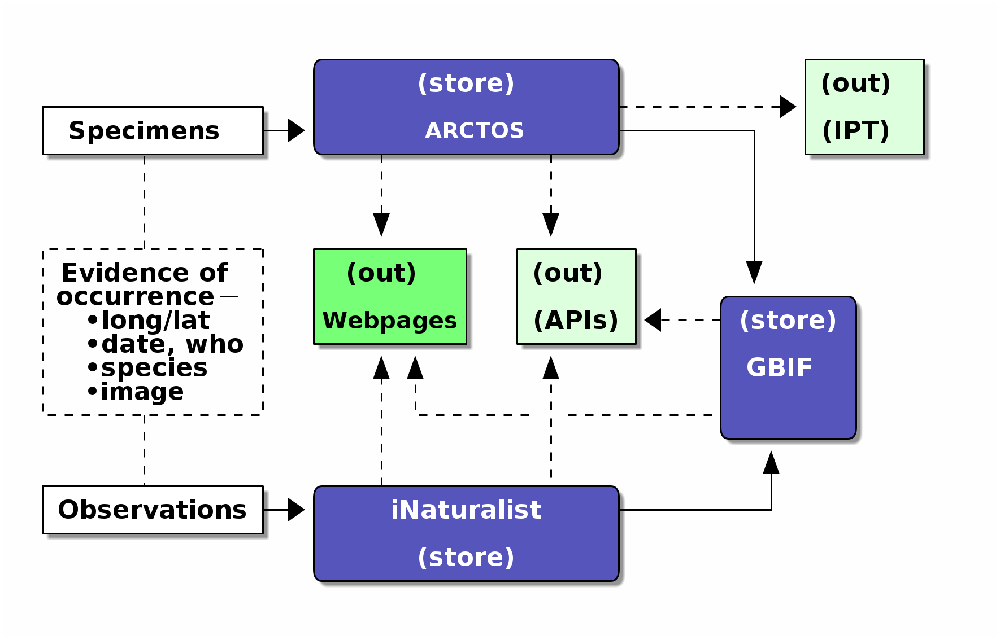

AKDatUM: Arctos & iNat
Posted by Cam on 2022-01-20 for AKDatUM workshop
Short URL to here: is.gd/akdcam

Data
Evidence of the occurrence of an organism at a place and time:
- Physical collections (specimens)
- Observations (without or with photographs)
Key data:
- Where? (long/lat)
- When?
- What species?
- Recorded by who?
Data stores
Specimen information is stored in a museum collections database. At UAF, for Alaska, we use Arctos: arctos.database.museum
The largest open repository of human observation data is iNaturalist: inaturalist.org
The largest global biodiversity occurrence data store, which contains the data in Arctos and iNaturalist and many other sources, is GBIF, the Global Biodiversity Information Facility: gbif.org
Obtaining the data
Each of these sites allows:
- Queries via their web pages and downloads of queried data, via a browser
- More comprehensive access to their data via an API (Application Programming Interface)
Arctos
To download data from Arctos:
- Make a user account and log in
- Query the database using the search boxes at arctos.database.museum
- On the results page, find the drop-down named “Tools: Map, Customize or Download” and select Download
The Arctos API endpoint can be seen here; the results are in JSON. Information about the Arctos API can be found here.
An efficient way to get large data downloads from Arctos is via the IPT dumps (from Vertnet) prepared for inporting the data into GBIF.
iNaturalist
- Make a user account and log in
- Go to ‘Explore’ and enter a taxon and a place
- Click the ‘Filters’ box and the advanced search options will appear. At the bottom left is a link for Download.
- Adjust your search details and the fields you want returned and go to ‘4. Export’
Information about the API is here